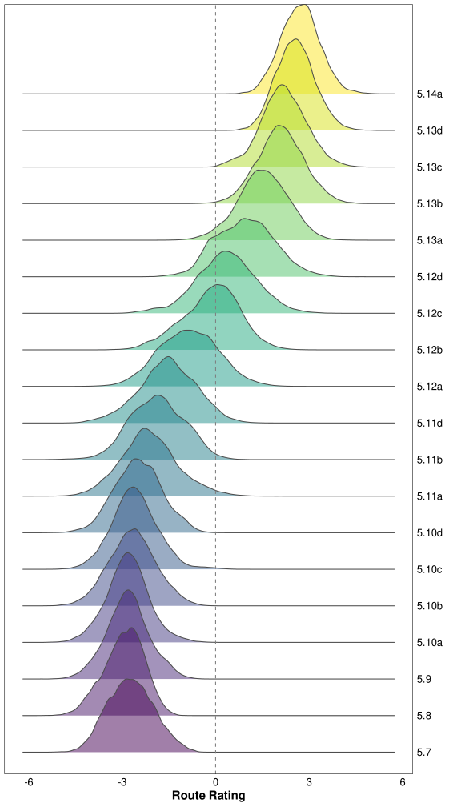
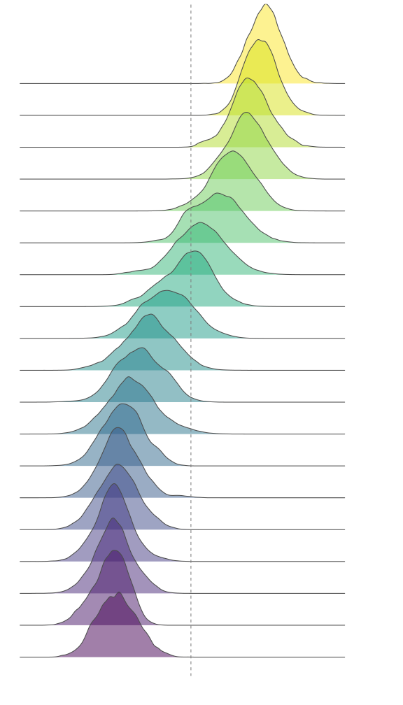
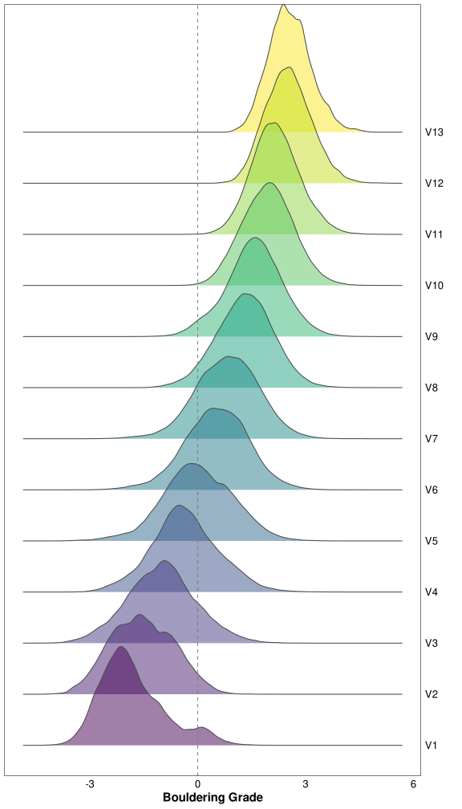
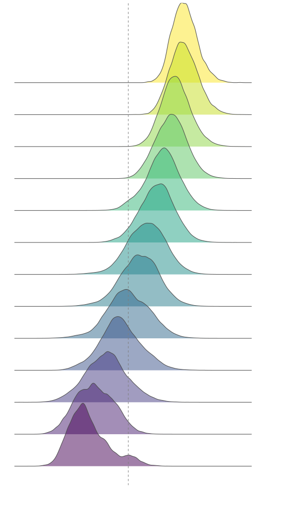

library(here) # Working directory management
library(fs) # File & folder manipulation
library(pipebind) # Piping goodies
library(cmdstanr) # Lightweight R interface for Stan
library(posterior) # Wrangling Stan models' output
library(data.table) # Fast data manipulation (in-RAM)
library(duckdb) # DuckDB R interface
library(dplyr) # Manipulating data.frames - core (Tidyverse)
library(tidyr) # Manipulating data.frames - extras (Tidyverse)
library(dbplyr) # DB/SQL backend for dplyr/tidyr (Tidyverse)
library(stringr) # Manipulating strings (Tidyverse)
library(purrr) # Manipulating lists (Tidyverse)
library(lubridate) # Manipulating date/time (Tidyverse)
library(ggplot2) # Best plotting library (Tidyverse)
library(ggridges) # Ridgeline plots (ggplot2 addon)
library(bayesplot) # PPC/Diagnostic plots for Stan models
library(patchwork) # Combining plots
options(
mc.cores = max(1L, parallel::detectCores(logical = TRUE)),
scipen = 999L,
digits = 4L,
ggplot2.discrete.colour = \() scale_color_viridis_d(),
ggplot2.discrete.fill = \() scale_fill_viridis_d()
)
nrows_print <- 10
data.table::setDTthreads(parallel::detectCores(logical = FALSE))
Tip
You can check the page’s source code by clicking on the </> Code button at the top-right.
Setup
Stan setup
Installing CmdStan
cmdstanr::check_cmdstan_toolchain(fix = TRUE, quiet = TRUE)
cpp_opts <- list(
stan_threads = TRUE
, STAN_CPP_OPTIMS = TRUE
, STAN_NO_RANGE_CHECKS = TRUE # WARN: remove this if you haven't tested the model
, PRECOMPILED_HEADERS = TRUE
, CXXFLAGS_OPTIM = "-march=native -mtune=native"
, CXXFLAGS_OPTIM_TBB = "-mtune=native -march=native"
, CXXFLAGS_OPTIM_SUNDIALS = "-mtune=native -march=native"
)
cmdstanr::install_cmdstan(cpp_options = cpp_opts, quiet = TRUE)Loading CmdStan (if already installed)
highest_cmdstan_version <- dir_ls(config$cmdstan_path) |>
path_file() |>
keep(\(e) str_detect(e, "cmdstan-")) |>
bind(x, str_split(x, '-', simplify = TRUE)[,2]) |>
reduce(\(x, y) ifelse(utils::compareVersion(x, y) == 1, x, y))
set_cmdstan_path(glue::glue("{config$cmdstan_path}cmdstan-{highest_cmdstan_version}"))Setting up knitr’s engine for CmdStan
## Inspired by: https://mpopov.com/blog/2020/07/30/replacing-the-knitr-engine-for-stan/
## Note: We could haved use cmdstanr::register_knitr_engine(),
## but it wouldn't include compiler optimizations & multi-threading by default
knitr::knit_engines$set(
cmdstan = function(options) {
output_var <- options$output.var
if (!is.character(output_var) || length(output_var) != 1L) {
stop(
"The chunk option output.var must be a character string ",
"providing a name for the returned `CmdStanModel` object."
)
}
if (options$eval) {
if (options$cache) {
cache_path <- options$cache.path
if (length(cache_path) == 0L || is.na(cache_path) || cache_path == "NA") {
cache_path <- ""
}
dir <- paste0(cache_path, options$label)
} else {
dir <- tempdir()
}
file <- cmdstanr::write_stan_file(options$code, dir = dir, force_overwrite = TRUE)
mod <- cmdstanr::cmdstan_model(
stan_file = file,
cpp_options = list(
stan_threads = TRUE
, STAN_CPP_OPTIMS = TRUE
, STAN_NO_RANGE_CHECKS = TRUE # The model was already tested
, PRECOMPILED_HEADERS = TRUE
# , CXXFLAGS_OPTIM = "-march=native -mtune=native"
, CXXFLAGS_OPTIM_TBB = "-mtune=native -march=native"
, CXXFLAGS_OPTIM_SUNDIALS = "-mtune=native -march=native"
),
stanc_options = list("O1"),
force_recompile = TRUE
)
assign(output_var, mod, envir = knitr::knit_global())
}
options$engine <- "stan"
code <- paste(options$code, collapse = "\n")
knitr::engine_output(options, code, '')
}
)
💻 Expand for Session Info
─ Session info ───────────────────────────────────────────────────────────────
setting value
version R version 4.3.1 (2023-06-16)
os Ubuntu 22.04.3 LTS
system x86_64, linux-gnu
ui X11
language (EN)
collate C.UTF-8
ctype C.UTF-8
tz Europe/Paris
date 2023-09-29
pandoc 3.1.8
Quarto 1.4.392
Stan (CmdStan) 2.33.1
─ Packages ───────────────────────────────────────────────────────────────────
! package * version date (UTC) lib source
P bayesplot * 1.10.0 2022-11-16 [?] CRAN (R 4.3.0)
P cmdstanr * 0.6.1.9000 2023-09-21 [?] Github (stan-dev/cmdstanr@17678d5)
P crayon * 1.5.2 2022-09-29 [?] CRAN (R 4.3.0)
P data.table * 1.14.9 2023-05-05 [?] Github (Rdatatable/data.table@8803918)
P DBI * 1.1.3 2022-06-18 [?] CRAN (R 4.3.0)
P dbplyr * 2.3.3.9000 2023-09-21 [?] Github (Tidyverse/dbplyr@ac59da3)
P dplyr * 1.1.3 2023-09-03 [?] RSPM (R 4.3.0)
P duckdb * 0.8.1-3 2023-09-01 [?] RSPM (R 4.3.0)
P fs * 1.6.3 2023-07-20 [?] CRAN (R 4.3.0)
P ggplot2 * 3.4.3 2023-08-14 [?] CRAN (R 4.3.0)
P ggridges * 0.5.4 2022-09-26 [?] CRAN (R 4.3.0)
P gt * 0.9.0 2023-03-31 [?] CRAN (R 4.3.0)
P here * 1.0.1 2020-12-13 [?] CRAN (R 4.3.0)
P lubridate * 1.9.2 2023-02-10 [?] CRAN (R 4.3.0)
P patchwork * 1.1.3 2023-08-14 [?] CRAN (R 4.3.0)
P pipebind * 0.1.2 2023-08-30 [?] CRAN (R 4.3.0)
P posterior * 1.4.1 2023-03-14 [?] CRAN (R 4.3.0)
P purrr * 1.0.2 2023-08-10 [?] CRAN (R 4.3.0)
P stringr * 1.5.0 2022-12-02 [?] CRAN (R 4.3.0)
P tidyr * 1.3.0 2023-01-24 [?] CRAN (R 4.3.0)
[1] /home/mar/Dev/Projects/R/ma-riviere.com/renv/library/R-4.3/x86_64-pc-linux-gnu
[2] /home/mar/.cache/R/renv/sandbox/R-4.3/x86_64-pc-linux-gnu/9a444a72
P ── Loaded and on-disk path mismatch.
──────────────────────────────────────────────────────────────────────────────1 Data
1.1 Extracting the data
Connecting to the .sqlite DB (using DuckDB instead of SQLite):
INSTALL sqlite;
LOAD sqlite;
CALL sqlite_attach(?db_path);dbplyr automatically translates dplyr/tidyr code into SQL
(list(
## Table 1: ascent
tbl(con_duck, "ascent") |>
filter(country %like% "USA") |>
mutate(
route_id = str_c(
str_replace_all(crag, ' ', '_'), "__",
str_replace_all(name, ' ', '_'), "__",
if_else(climb_type == 1, 'boulder', 'rope')
),
ascent_date = as.integer(date)
) |>
select(user_id, route_id, climb_type, grade_id, method_id, ascent_date)
,
## Table 2: grade
tbl(con_duck, "grade") |>
select(grade_id = id, usa_routes, usa_boulders),
## Table 3: method
tbl(con_duck, "method") |>
select(method_id = id, method_name = name)
)
|> reduce(left_join)
|> select(-grade_id, -method_id)
|> compute("climb_dbp")
)Time difference of 0.4786 secs
SELECT
ascent.user_id
, REPLACE(ascent.crag, ' ', '_')
|| '__' || REPLACE(ascent.name, ' ', '_')
|| '__' || CASE WHEN ascent.climb_type = 1 THEN 'boulder' ELSE 'rope' END
AS route_id
, ascent.climb_type as climb_type
, ascent.date AS ascent_date
, grade.usa_routes
, grade.usa_boulders
, method.name AS method_name
FROM ascent
JOIN grade ON grade.id = ascent.grade_id
JOIN method ON method.id = ascent.method_id
WHERE ascent.country = 'USA'Time difference of 0.4687 secs
data.frame [658,822 x 7]
| [ omitted 658,807 entries ] |
1.2 Processing the data
dt_clean <- (
climb_dt[
climb_dt[, .I[which.min(ascent_date)], by = .(user_id, route_id)]$V1
][
, let(
ascent_date = as_datetime(ascent_date),
usa_boulders = factor(usa_boulders, levels = bouldering_grades),
usa_routes = factor(usa_routes, levels = route_ratings),
label = as.integer(method_name %chin% c("Onsight", "Flash"))
)
][
, let(route_rating = mode(usa_routes), bouldering_grade = mode(usa_boulders))
, by = route_id
][, threshold_ascents_dt(.SD)
][
, let(
route_idx = frank(route_id, ties.method = "dense"),
user_idx = frank(user_id, ties.method = "dense")
)
][order(user_idx), -c("usa_routes", "usa_boulders", "method_name")]
)Time difference of 4.99 secsthreshold_ascents_dbp
db_create_index(con_duck, "climb_dbp", "route_id")
db_create_index(con_duck, "climb_dbp", "user_id")
threshold_ascents_dbp <- function(old, lim = 20, collect = TRUE) {
if(collect) old <- collect(old)
new <- old |> filter(n() >= lim, .by = user_id) |>
filter(n() >= lim, .by = route_id)
if (nrow(collect(old)) != nrow(collect(new))) threshold_ascents_dbp(new, lim)
else if (collect) {
copy_to(con_duck, new, name = "dbp_temp")
return(tbl(con_duck, "dbp_temp"))
}
else return(new)
}Since DuckDB doesn’t have a mode function, we need to find another way to obtain the most common route_rating and bouldering_grade for each route_id. I do this by creating a reference table for each unique route_id for each of the two ratings, and then update the original data’s rows based on them.
(tbl(con_duck, "climb_dbp")
|> select(route_id, route_rating = usa_routes)
|> filter(route_rating %in% route_ratings)
|> count(route_id, route_rating)
|> slice_max(n, with_ties = FALSE, na_rm = TRUE, by = route_id)
|> select(-n)
|> compute("dbp_rr")
)
(tbl(con_duck, "climb_dbp")
|> select(route_id, bouldering_grade = usa_boulders)
|> filter(bouldering_grade %in% bouldering_grades)
|> count(route_id, bouldering_grade)
|> slice_max(n, with_ties = FALSE, na_rm = TRUE, by = route_id)
|> select(-n)
|> compute("dbp_bg")
)(tbl(con_duck, "climb_dbp")
|> rename(route_rating = usa_routes, bouldering_grade = usa_boulders)
|> mutate(label = as.integer(method_name %in% c("Onsight", "Flash")))
|> select(-method_name)
|> slice_min(ascent_date, with_ties = FALSE, by = c(user_id, route_id))
|> mutate(route_rating = NA, bouldering_grade = NA)
|> rows_patch(tbl(con_duck, "dbp_rr"), by = "route_id", unmatched = "ignore")
|> rows_patch(tbl(con_duck, "dbp_bg"), by = "route_id", unmatched = "ignore")
|> threshold_ascents_dbp()
|> mutate(
route_idx = dense_rank(route_id),
user_idx = dense_rank(user_id),
ascent_date = to_timestamp(ascent_date)
)
|> compute("dbp_clean")
)Time difference of 3.026 secsdata.table [232,887 x 9]
| [ omitted 232,872 entries ] |
2 Model
2.1 Stan code
Updated Stan code using within-chain parallelization
functions {
array[] int sequence(int start, int end) {
array[end - start + 1] int seq;
for (n in 1 : num_elements(seq)) {
seq[n] = n + start - 1;
}
return seq;
}
// Compute partial sums of the log-likelihood
real partial_log_lik_lpmf(array[] int seq, int start, int end,
data array[] int labels, real mean_ability,
data array[] int users, vector user_ability,
data array[] int routes, vector route_difficulty) {
real ptarget = 0;
int N = end - start + 1;
vector[N] mu = mean_ability + rep_vector(0.0, N);
for (n in 1 : N) {
int nn = n + start - 1;
mu[n] += user_ability[users[nn]] - route_difficulty[routes[nn]];
}
ptarget += bernoulli_logit_lpmf(labels[start : end] | mu);
return ptarget;
}
}
data {
int<lower=1> num_ascents;
int<lower=1> num_users;
int<lower=1> num_routes;
array[num_ascents] int<lower=1, upper=num_users> users;
array[num_ascents] int<lower=1, upper=num_routes> routes;
array[num_ascents] int<lower=0, upper=1> labels;
int grainsize;
}
transformed data {
array[num_ascents] int seq = sequence(1, num_ascents);
}
parameters {
real mean_ability;
vector[num_users] user_ability;
vector[num_routes] route_difficulty;
}
model {
user_ability ~ std_normal();
route_difficulty ~ std_normal();
mean_ability ~ std_normal();
target += reduce_sum(
partial_log_lik_lpmf, seq, grainsize,
labels, mean_ability, users, user_ability, routes, route_difficulty
);
}2.2 Stan data
stan_data <- list(
num_ascents = nrow(dt_clean),
num_users = n_distinct(dt_clean$user_id),
num_routes = n_distinct(dt_clean$route_id),
routes = pull(dt_clean, route_idx),
users = pull(dt_clean, user_idx),
labels = pull(dt_clean, label) |> as.integer(),
grainsize = max(100, nrow(dt_clean) / 50)
)List of 7
$ num_ascents: int 232887
$ num_users : int 2977
$ num_routes : int 4288
$ routes : int [1:232887] 2459 2787 2870 2910 3007 3128 3150 3359 2482 2475 ...
$ users : int [1:232887] 1 1 1 1 1 1 1 1 1 1 ...
$ labels : int [1:232887] 1 1 1 1 1 0 0 1 1 0 ...
$ grainsize : num 46582.3 Model fit
mod_stan <- mod_stan_exe$sample(
data = stan_data, seed = 666,
iter_warmup = 500, iter_sampling = 1000, refresh = 0,
chains = 6, parallel_chains = 6, threads_per_chain = 5
)
Note
Sampling takes ~4.89 minutes on my CPU (Ryzen 5950X, 16 Cores/32 Threads), on WSL2 (Ubuntu 22)
data.table [6 x 2]
3 Model diagnostics
Plotting random subsets of the traces
hist_trace_plot <- function(mod, vars) {
draws <- mod$draws(variables = vars, format = "draws_list")
wrap_plots(
mcmc_hist(draws, facet_args = list(nrow = length(vars))),
mcmc_trace(draws, facet_args = list(nrow = length(vars))),
widths = c(1, 1.5)
)
}

4 Posterior Predictions
4.1 Posterior data
Getting our Posterior Predictions (subset of 500 draws per route) into long format:
Comparing data.table, dbplyr, and dplyr (which uses the rvar format from posterior):
draws_dt <- (
## For each player, take a subsample of 500 draws from their posterior
mod_stan$draws(variables = "route_difficulty")
|> bind(x, subset_draws(x, "route_difficulty", regex = TRUE, draw = sample.int(ndraws(x), size = 500)))
|> as.data.table()
|> _[, .(route_difficulty = list(value)), by = variable
][, let(route_idx = as.integer(str_extract(variable, "\\d{1,4}")), variable = NULL)]
)
pp_dt <- (
dt_clean[, .(route_idx, bouldering_grade, route_rating, climb_type)]
|> unique(by = "route_idx")
|> _[draws_dt, on = "route_idx", nomatch = NULL
][, let(
bouldering_grade = factor(bouldering_grade, levels = bouldering_grades),
route_rating = factor(route_rating, levels = route_ratings)
)
][order(route_idx)]
)data.table [4,288 x 5]
| [ omitted 4,273 entries ] |
Time difference of 1.574 secs
db_create_index(con_duck, "dbp_clean", "route_idx")
(mod_stan$draws(variables = "route_difficulty")
|> bind(x, subset_draws(x, "route_difficulty", regex = TRUE, draw = sample.int(ndraws(x), size = 500)))
|> as_draws_df()
|> as.data.frame()
|> pivot_longer(everything(), names_to = "route_idx", names_pattern = ".*\\[(\\d{1,4})\\]")
|> copy_to(con_duck, df = _, "draws", overwrite = TRUE)
)
(tbl(con_duck, "dbp_clean")
|> select(route_idx, bouldering_grade, route_rating, climb_type)
|> distinct(route_idx, .keep_all = TRUE)
|> inner_join(tbl(con_duck, "draws"), by = "route_idx")
|> arrange(route_idx)
|> compute("pp_dbp")
)data.frame [4,288 x 5]
| [ omitted 4,273 entries ] |
Time difference of 1.093 secsWith dplyr, we can use the rvar format to encapsulate the samples from the model, which drastically reduces the size of the samples’ data.frame
(
inner_join(
as.data.frame(dt_clean) |>
select(route_idx, bouldering_grade, route_rating, climb_type) |>
distinct(route_idx, .keep_all = TRUE),
tidybayes::spread_rvars(mod_stan, route_difficulty[route_idx], ndraws = 500),
by = "route_idx"
)
|> mutate(
bouldering_grade = factor(bouldering_grade, levels = bouldering_grades),
route_rating = factor(route_rating, levels = route_ratings)
)
|> arrange(route_idx)
)data.frame [4,288 x 5]
| [ omitted 4,273 entries ] |
Time difference of 0.9207 secs
4.2 Posterior plots:
Plot code
ridgeline_plot <- function(dat, var) {
if (class(dat[, route_difficulty]) == "list")
dat <- dat[, .(route_difficulty = unlist(route_difficulty)), by = setdiff(names(dat), 'route_difficulty')]
ggplot(dat, aes_string(y = var)) +
ggridges::geom_density_ridges(
aes_string(x = "route_difficulty", fill = var),
alpha = 0.5, scale = 2.5, color = "grey30"
) +
geom_vline(xintercept = 0, linetype = "dashed", color = "grey50") +
labs(x = str_to_title(str_replace_all(var, "_", " ")), y = "") +
scale_y_discrete(position = "right") +
theme(legend.position = "none", axis.line.y = element_blank())
}Route Rating:
ridgeline_plot(pp_dt[climb_type == 0], "route_rating")


Bouldering Grade:
ridgeline_plot(pp_dt[climb_type == 1 & bouldering_grade != "V0"], "bouldering_grade")


Citation
BibTeX citation:
@online{rivière2022,
author = {Rivière, Marc-Aurèle},
title = {Bayesian {Rock} {Climbing} {Rankings}},
pages = {undefined},
date = {2022-04-19},
url = {https://ma-riviere.com/content/code/posts/climbing},
langid = {en},
abstract = {This post is a transposition to R of Ethan Rosenthal’s
{[}article{]}(https://www.ethanrosenthal.com/2022/04/15/bayesian-rock-climbing/)
on modeling Rock Climbing using a Bayesian IRT model. The original
Stan code was updated to use {[}within-chain
parallelization{]}(https://mc-stan.org/docs/2\_30/stan-users-guide/reduce-sum.html)
and {[}compiler
optimization{]}(https://mc-stan.org/docs/2\_30/stan-users-guide/optimization.html)
for faster CPU sampling. Several solutions are showcased for the
data processing, such as `data.table` and `dbplyr` with a `DuckDB`
backend, with timings to compare their speed.}
}
For attribution, please cite this work as:
Rivière, M.-A. (2022, April 19). Bayesian Rock Climbing
Rankings. https://ma-riviere.com/content/code/posts/climbing